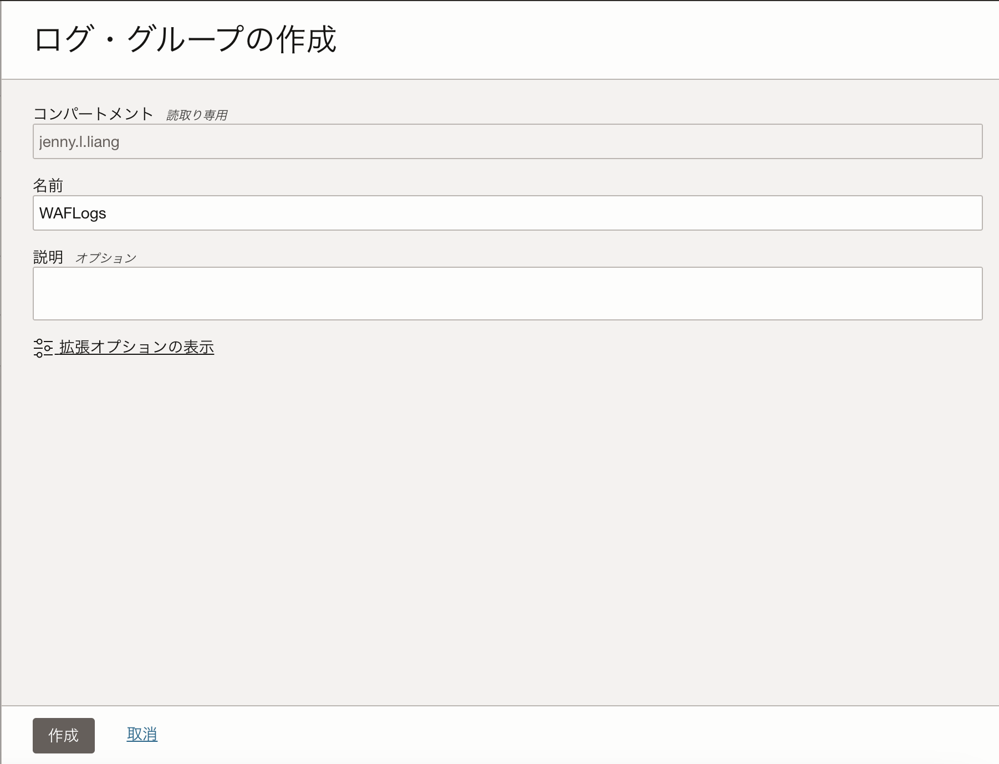

OCIでは、OCI Load Balancerに直接デプロイするWAF、”WAFポリシー”と、お客様のアプリケーションのドメインに構築するWAF、”エッジポリシー”の2種類のWAFを提供しています。 本チュートリアルでは、「OCI Web Application Firewallのエッジポリシーを使ってWebサーバを保護する」の続編として、エッジポリシー内のログをObject Storageを経由してLogging Analyticsに転送し、ログを分析する手順を紹介します。
所要時間： 約40分（SRによる対応を除く）
前提条件：
- OCIチュートリアル「OCI Web Application Firewallのエッジポリシーを使ってWebサーバを保護する」を参考に、エッジポリシーの作成が完了していること
- OCI CLIコマンドがインストール、構成されていること
- Logging Analyticsが有効化されていること
- OCIコンソールのメニューボタン→監視および管理→ログ・アナリティクス→ログ・エクスプローラを選択し、「ログ・アナリティクスの使用の開始」を選択することで、Logging Analyticsを有効化させることができます。

- ユーザーがLogging Analyticsを使用するためのポリシーが作成されていること。ポリシーの詳細はOCIチュートリアル「OCIのLogging AnalyticsでOCIの監査ログを可視化・分析する」もしくは、ドキュメントをご参照ください。
- ユーザーにObject Storageの管理権限がIAMポリシーで付与されていること。ポリシーの詳細はドキュメント「オブジェクト・ストレージへのWAFログの配信」をご参照ください。
注意 : ※チュートリアル内の画面ショットについてはOracle Cloud Infrastructureの現在のコンソール画面と異なっている場合があります。
1. Object Storageバケットの作成
エッジポリシー内のログの転送先となるObject Storageを作成します。 エッジポリシーのログは、SRをあげることで指定したObject Storageに転送することが可能です。
OCIコンソール画面左上のメニュー → ストレージ → オブジェクト・ストレージとアーカイブ・ストレージ → バケット → 「バケットの作成」ボタンをクリックします。
表示された「バケットの作成」画面にて、任意のバケット名を入力し、「作成」ボタンをクリックします。
※その他の項目はデフォルトのままで構いません。
バケットを作成したら、バケットの可視性をプライベートからパブリックに変更します。
作成したバケットの詳細画面を開き、画面左上の「可視性の編集」ボタンをクリックします。
「可視性の編集」画面にて「パブリック」を選択し、「変更の保存」ボタンをクリックします。

バケットの作成、可視性の編集が完了したら、この後の手順でSRを作成する際にバケットの情報が必要になるため、バケット名とネームスペースをメモします。
バケットのネームスペースはバケットの詳細ページから確認することが出来ます。
2. 顧客秘密キーの作成
操作を実行するユーザーの顧客秘密キーを作成します。
OCIコンソール画面右上のユーザーのアイコン → 「自分のプロファイル」を選択します。
画面左下のリソースから「顧客秘密キー」を選択し、「秘密キーの生成」ボタンをクリックします。
「秘密キーの生成」画面にて、任意の名前を入力し、「秘密キーの生成」ボタンをクリックします。
秘密キーのシークレット・キーが生成されるので、「コピー」してメモ帳にメモします。
※この後の手順で使用します。
作成した秘密キーの「アクセス・キー」もコピーしてメモ帳にメモします。
※この後の手順で使用します。
3. 資格証明を含むファイルの作成
以下の情報を含むファイルを作成し、バケットに格納します。
・Web App (エッジポリシーのドメイン名):エッジポリシー作成時に登録したドメイン名
・SecretKey:手順2でコピーした秘密キーのシークレット・キー
・AccessKey:手順2でコピーした秘密キーのアクセス・キー
・Object storage bucket_region:手順1でバケットを作成したリージョン
・Object storage bucket_name:手順1で作成したバケット名
・Namespace:手順1でコピーしたネームスペース
・Endpoint Url: https://<namespace>.compat.objectstorage.<region>.oraclecloud.com
・Upload prefix：ログファイルのファイルフォーマット（デフォルトは%{[webapp_domain]}_/%{+YYYY}/%{+MM}/%{+dd})）
例）
Web App: waf.jennyweb.net
SecretKey:xxxxxxxxxxxxxx
AccessKey:5b4fc091b779399247693f5468aa245c9c3f3c07
Object Storage bucket_region: us-ashburn-1
Object Storage bucket_name: WAFLogBucket
Namespace: xxxxxxx
Endpoint URL: https:xxxxxx.compat.objectstorage.us-ashburn-1.oraclecloud.com
Upload prefix:
ファイルに保存したら、手順1で作成したバケットにファイルをアップロードします。
手順1で作成したバケットの詳細画面 → 画面左下のリソース → オブジェクトから、「アップロード」ボタンをクリックします。
「オブジェクトのアップロード」画面にて、作成したファイルを選択し、「アップロード」ボタンをクリックします。
オブジェクトにファイルがアップロードされたことを確認します。

4. 事前認証済リクエストの作成
手順3でアップロードしたファイルの右端の3つの点をクリックし、「事前認証済リクエストの作成」を選択します。
「事前認証済リクエストの作成」画面にて、事前認証済リクエスト・ターゲットが「オブジェクト」、アクセス・タイプが「オブジェクトの読取りを許可」がそれぞれ選択されていることを確認し、「事前認証済リクエストの作成」ボタンをクリックします。
事前認証済リクエストが作成されたら、「事前認証済リクエストの詳細」画面に表示される「事前認証済リクエストのURL」をコピーします。
※この後の手順でSRの作成時に事前認証済リクエストのURLが必要になります。
5. サポート・リクエストの作成
SRを作成し、サポートチームにエッジポリシーのログを手順1で作成したバケットに転送する設定を依頼します。 OCIコンソール画面左上のメニュー → Webアプリケーション・ファイアウォール → ポリシー → ログを転送したいエッジポリシーの右端の3つの点 → 「サポート・リクエストの作成」を選択します。
「サポート・オプション」の画面で、「サポート・リクエストの作成」ボタンをクリックします。
テクニカル・サポートのタブにて、問題のサマリーと問題の説明にそれぞれ以下を入力し、サポート・リクエストを作成します。
問題のサマリー： エッジポリシーのログをObject Storageに保存したい、という趣旨の題名問題の説明：ドキュメントのURLと手順4で作成した事前認証済リクエストのURLを記載します。一般的なガイダンスを選択します
サポート・リクエストが作成されたので、サポート・リクエストが対応されるまで待ちます。
※通常数日以内に対応されます。
サポート・リクエストのステータスはOCIコンソールに表示される「サポート」 → 「サポート・センターにアクセス」から作成したサポート・リクエストの一覧やステータスを確認することができます。
6. ログ・グループの作成
Object Storageに格納されたエッジポリシーのログの転送先となるLogging Analyticsの「ログ・グループ」を作成します。 Logging Analyticsではログを「ログ・グループ」単位で管理することができます。
OCIコンソール画面左上のメニュー → 監視および管理 → ログ・アナリティクス → 管理 → ログ・グループ → 「ログ・グループの作成」ボタンをクリックします。
表示された「ログ・グループの作成」画面にて、任意のログ・グループ名を入力し、「作成」ボタンをクリックします。

7. ログ・ソース、ログ・パーサーのインポート
エッジポリシーのログ・パーサー、ログ・ソースは事前にLogging Analyticsで定義されていないので、Oracle Blogからログ・ソースとログ・パーサーの定義ファイルをダウンロードして、インポートします。
定義ファイルは「Oracle Blog - 8.参考資料」の「ログ・ソース」からダウンロードできます。
定義ファイルをダウンロードしたら、Logging Analyticsに定義ファイルをインポートします。
OCIコンソール画面左上のメニュー → 監視および管理 → ログ・アナリティクス → 管理 → アクション → 構成コンテンツのインポートをクリックします。
「構成コンテンツのインポート」画面にて、Oracle Blogからダウンロードしたzipファイルを選択し、「インポート」ボタンを選択します。
インポートに成功したら、「WAF-LOG」というログ・ソースと「waf_lualog」、「waf_cachinglog」というログ・パーサーがそれぞれ追加されます。
8. Object Collection Ruleの作成
SRが対応されると、指定したObject StorageにWAFのログが格納されます。
Object Storageに格納されているログは、Logging AnalyticsのObject Collection Ruleを作成することで、Logging Analyticsに転送することが可能です。
Object Collection RuleはAPI経由で作成する必要があるため、今回はOCI CLIを使用してルールを作成します。
OCI CLIはOCIコンソールの「Cloud Shell」にデフォルトでインストールされているので、Cloud Shellにアクセスします。
もしくはOCI CLIをインストール、構成済みのインスタンスがある場合は、インスタンスにアクセスしてください。
OCIコンソール画面右上の「開発者ツール」をクリックし、「Cloud Shell」を選択します。
以下コマンドをCloud Shellで実行し、OCI CLIコマンドがインストールされていることを確認します。
$oci -v
3.40.3
Object Collection Ruleを作成するには以下の情報が必要になるため、それぞれ事前にメモをします。
- コンパートメントOCID: ルールを作成するコンパートメントのOCID
- ログ・グループOCID: 手順6で作成したログ・グループのOCID
- ログ・ソース名: 手順7でインポートしたログ・ソースの名前（WAF_LOGS）
- 名前: ルールの名前（任意）
- ネームスペース: Logging Analyticsのネームスペース
- バケット名: 手順1で作成したObject Storageバケットの名前
- OSネームスペース: Object Storageのネームスペース
コンパートメントのOCIDは、OCIコンソール画面左上のメニュー → アイデンティティとセキュリティ → アイデンティティ → コンパートメントから、ルールを作成するコンパートメントのOCIDをコピーしてください。
手順6で作成したログ・グループのOCIDは、ログ・グループの詳細画面からコピーすることが可能です。
Logging Analyticsのネームスペース名は、OCIコンソール画面左上のメニュー → 監視および管理 → ログ・アナリティクス → 管理 → サービス詳細画面から確認することが可能です。
また、Object Storageのネームスペースは、手順1で作成したObject Storageバケットの詳細画面から確認することが可能です。
それぞれの情報を手元にメモをしたら、以下コマンドを実行します。 OCI CLIコマンドの詳細についてはこちらのドキュメントをご参照ください。
$oci log-analytics object-collection-rule create --compartment-id <コンパートメントOCID> --log-group-id <手順6で作成したログ・グループのOCID> --log-source-name WAF_LOGS --name <ルールの名前> --namespace-name <Logging Analyticsのネームスペース> --os-bucket-name <手順1で作成したObject Storageバケットの名前> --os-namespace <Object Storageのネームスペース> --collection-type HISTORC_LIVE --poll-since BEGINNING
例）
$oci log-analytics object-collection-rule create --compartment-id ocid1.compartment.oc1..aaaaaaaaxxxxxxx --log-group-id ocid1.loganalyticsloggroup.oc1.iad.amaaaaaatxxxxx --log-source-name WAF_LOGS --name edgelogcollection --namespace-name nr3c2r62ocsa --os-bucket-name WAFLogBucket --os-namespace nr3c2r62ocsa --collection-type HISTORIC_LIVE --poll-since BEGINNING
Object Collection Ruleの作成に成功すると、以下のようなレスポンスが返ってきます。
{
"data": {
"char-encoding": null,
"collection-type": "HISTORIC_LIVE",
"compartment-id": "ocid1.compartment.oc1..aaaaaaaaxxxxx",
"defined-tags": {
"Oracle-Tags": {
"CreatedBy": "default/xxxxxxxxxx",
"CreatedOn": "2024-05-28T01:41:51.017Z"
}
},
"description": null,
"entity-id": null,
"freeform-tags": {},
"id": "ocid1.loganalyticsobjectcollectionrule.oc1.iad.amaaaaaaxxxxxx",
"is-enabled": true,
"is-force-historic-collection": null,
"lifecycle-details": null,
"lifecycle-state": "ACTIVE",
"log-group-id": "ocid1.loganalyticsloggroup.oc1.iad.amaaaaaaxxxxxxx",
"log-set": null,
"log-set-ext-regex": null,
"log-set-key": null,
"log-source-name": "WAF_LOGS",
"log-type": "LOG",
"name": "edgelogcollection",
"object-name-filters": null,
"os-bucket-name": "WAFLogBucket",
"os-namespace": "nr3c2r62ocsa",
"overrides": null,
"poll-since": "1970-01-01T00:00:00.000Z",
"poll-till": null,
"time-created": "2024-05-28T01:41:51.055000+00:00",
"time-updated": "2024-05-28T01:41:51.055000+00:00",
"timezone": null
},
"etag": "fb6dccf04a8988aac27fd86fce694befecdd9442fcff6bb808baf37955f17704"
}
OCIコンソール画面左上のメニュー → 監視および管理 → ログ・アナリティクス → ログ・エクスプローラ選択すると、「WAF_LOGS」が収集されていることが確認できます。
※デフォルトで過去60分間に収集されたログが表示されます。ログが表示されない場合は、画面右上の時間選択枠から、選択範囲を広げてみてください。
ログ・エクスプローラーから「WAF_LOGS」を選択すると、ログを一覧で確認することができます。
9. ダッシュボードのインポート
エッジポリシーのログの事前定義済みのダッシュボードをインポートして、ログを可視化してみます。
ダッシュボード定義は「Oracle Blog - 8.参考資料」の「ダッシュボード」からダウンロードできます。
ダッシュボードの定義ファイルをダウンロードしたら、Logging Analyticsにインポートします。
OCIコンソール画面左上のメニュー → 監視および管理 → ログ・アナリティクス → ダッシュボード → 「Import Dashboard」を選択します。
ダウンロードした定義ファイルを選択し、ダッシュボードのインポート画面で、「Compartments for dashboards」と「Compartments for saved searches」をそれぞれ「Specify a compartment for all saved searches」を選択します。
ダッシュボードを保存するコンパートメント、保存済検索を保存するコンパートメントをそれぞれ指定したら「Import」ボタンをクリックします。
ダッシュボードのインポートに成功すると、以下5つのダッシュボードが作成されます。
- WAF Activity Overview - エッジポリシーログの全体概要
- OWASP top 10 threats - 検知された保護ルールに関するログの監視
- Threat Intel Feed Detection - 脅威インテリジェンスによって検知されたログの監視
- WAF Access Rules Detection - アクセス制御によって検知されたログの監視
- WAF JS Challenges - Javascript Challenge機能によって検知されたログの監視
それぞれのダッシュボードは、エッジポリシーのログを事前に分析、可視化した内容が定義されているため、すぐに監視にお役立ていただくことができます。
例えば「WAF Activity Overview」のダッシュボードでは一例として以下のような内容をログから可視化することができます。
- 「WAF OCI Global Access Request Number」- WAFへの総合アクセス数
- 「WAF OCI Global Access Return Code By Application」- WEBアプリケーションごとのWAFの返却コードの内訳
- 「WAF OCI Global Access By URL Top 10」- アクセスが多かったURL上位10
各ダッシュボードは画面右上の「Action」→「Edit」から修正することもできます。
ログの分析方法についてはOCIチュートリアル「OCIのLogging AnalyticsでOCIの監査ログを可視化・分析する - 4.ログの分析」をご参照ください。
以上で、エッジポリシーのログをLogging Analyticsに転送して分析する手順は完了です。 是非、ダッシュボードを実運用に合わせてカスタマイズしてご活用ください。